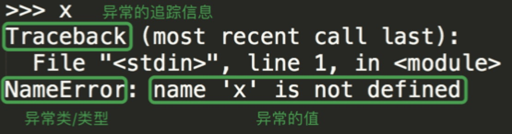

Python之旅：异常处理
什么是异常
异常是程序发生错误的信号。程序一旦出现错误，便会产生一个异常，若程序中没有处理它，就会抛出该异常，程序的运行也随之终止。在Python中,错误触发的异常如下

而错误分成两种，一种是语法上的错误SyntaxError，这种错误应该在程序运行前就修改正确
1 | if |
另一类就是逻辑错误，常见的逻辑错误如
1 | # TypeError：数字类型无法与字符串类型相加 |
异常处理
try-except
try的工作原理是，当开始一个try语句后，python就在当前程序的上下文中作标记，这样当异常出现时就可以回到这里，try子句先执行，接下来会发生什么依赖于执行时是否出现异常。
- 如果当try后的语句执行时发生异常，python就跳回到try并执行第一个匹配该异常的except子句，异常处理完毕，控制流就通过整个try语句（除非在处理异常时又引发新的异常）。
- 如果在try后的语句里发生了异常，却没有匹配的except子句，异常将被递交到上层的try，或者到程序的最上层（这样将结束程序，并打印默认的出错信息）。
- 如果在try子句执行时没有发生异常，python将执行else语句后的语句（如果有else的话），然后控制流通过整个try语句
为了保证程序的容错性与可靠性，即在遇到错误时有相应的处理机制不会任由程序崩溃掉，我们需要对异常进行处理，处理的基本形式为
1 | try: |
举例
1 | try: |
本来程序一旦出现异常就整体结束掉了，有了异常处理以后，在被检测的代码块出现异常时，被检测的代码块中异常发生位置之后的代码将不会执行，取而代之的是执行匹配异常的except子代码块，其余代码均正常运行。
当被检测的代码块中有可能触发不同类型的异常时，针对不同类型的异常：
如果我们想分别用不同的逻辑处理，需要用到多分支的except（类似于多分支的elif，从上到下依次匹配，匹配成功一次便不再匹配其他）
1 | try: |
举例
1 | def convert_int(obj): |
如果我们想多种类型的异常统一用一种逻辑处理，可以将多个异常放到一个元组内，用一个except匹配
1 | try: |
举例
1 | def convert_int(obj): |
如果我们想捕获所有异常并用一种逻辑处理，Python提供了一个万能异常类型Exception
1 | try: |
在多分支except之后还可以跟一个else（else必须跟在except之后，不能单独存在），只有在被检测的代码块没有触发任何异常的情况下才会执行else的子代码块
1 | try: |
try-finally 语句
此外try还可以与finally连用，从语法上讲finally必须放到else之后，但可以使用try-except-finally的形式，也可以直接使用try-finally的形式。无论被检测的代码块是否触发异常，都会执行finally的子代码块，因此通常在finally的子代码块做一些回收资源的操作，比如关闭打开的文件、关闭数据库连接等
1 | try: |
举例
1 | f=None |
raise语句
我们可以使用raise语句自己触发异常
raise语法格式如下：
1 | raise [Exception [, args [, traceback]]] |
在不符合Python解释器的语法或逻辑规则时，是由Python解释器主动触发的各种类型的异常，而对于违反程序员自定制的各类规则，则需要由程序员自己来明确地触发异常，这就用到了raise语句，raise后必须是一个异常的类或者是异常的实例
1 | class Student: |
在内置异常不够用的情况下，我们可以通过继承内置的异常类来自定义异常类
1 | class PoolEmptyError(Exception): # 可以通过继承Exception来定义一个全新的异常 |
最后，Python还提供了一个断言语句assert expression，断定表达式expression成立，否则触发异常AssertionError，与raise-if-not的语义相同，如下
1 | age='18' |
何时使用异常处理
在了解了异常处理机制后，本着提高程序容错性和可靠性的目的，读者可能会错误地认为应该尽可能多地为程序加上try…except…，这其是在过度消费程序的可读性，因为try…except本来就是你附加给程序的一种额外的逻辑，与你的主要工作是没有多大关系的。
如果错误发生的条件是“可预知的”，我们应该用if来进行”预防”，如下
1 | age=input('input your age>>: ').strip() |
如果错误发生的条件“不可预知”，即异常一定会触发，那么我们才应该使用try…except语句来处理。例如我们编写一个下载网页内容的功能，网络发生延迟之类的异常是很正常的事，而我们根本无法预知在满足什么条件的情况下才会出现延迟，因而只能用异常处理机制了
1 | import requests |
python标准异常
| 异常名称 | 描述 |
|---|---|
| BaseException | 所有异常的基类 |
| SystemExit | 解释器请求退出 |
| KeyboardInterrupt | 用户中断执行(通常是输入^C) |
| Exception | 常规错误的基类 |
| StopIteration | 迭代器没有更多的值 |
| GeneratorExit | 生成器(generator)发生异常来通知退出 |
| StandardError | 所有的内建标准异常的基类 |
| ArithmeticError | 所有数值计算错误的基类 |
| FloatingPointError | 浮点计算错误 |
| OverflowError | 数值运算超出最大限制 |
| ZeroDivisionError | 除(或取模)零 (所有数据类型) |
| AssertionError | 断言语句失败 |
| AttributeError | 对象没有这个属性 |
| EOFError | 没有内建输入,到达EOF 标记 |
| EnvironmentError | 操作系统错误的基类 |
| IOError | 输入/输出操作失败 |
| OSError | 操作系统错误 |
| WindowsError | 系统调用失败 |
| ImportError | 导入模块/对象失败 |
| LookupError | 无效数据查询的基类 |
| IndexError | 序列中没有此索引(index) |
| KeyError | 映射中没有这个键 |
| MemoryError | 内存溢出错误(对于Python 解释器不是致命的) |
| NameError | 未声明/初始化对象 (没有属性) |
| UnboundLocalError | 访问未初始化的本地变量 |
| ReferenceError | 弱引用(Weak reference)试图访问已经垃圾回收了的对象 |
| RuntimeError | 一般的运行时错误 |
| NotImplementedError | 尚未实现的方法 |
| SyntaxError | Python 语法错误 |
| IndentationError | 缩进错误 |
| TabError | Tab 和空格混用 |
| SystemError | 一般的解释器系统错误 |
| TypeError | 对类型无效的操作 |
| ValueError | 传入无效的参数 |
| UnicodeError | Unicode 相关的错误 |
| UnicodeDecodeError | Unicode 解码时的错误 |
| UnicodeEncodeError | Unicode 编码时错误 |
| UnicodeTranslateError | Unicode 转换时错误 |
| Warning | 警告的基类 |
| DeprecationWarning | 关于被弃用的特征的警告 |
| FutureWarning | 关于构造将来语义会有改变的警告 |
| OverflowWarning | 旧的关于自动提升为长整型(long)的警告 |
| PendingDeprecationWarning | 关于特性将会被废弃的警告 |
| RuntimeWarning | 可疑的运行时行为(runtime behavior)的警告 |
| SyntaxWarning | 可疑的语法的警告 |
| UserWarning | 用户代码生成的警告 |
 微信
微信 支付宝
支付宝